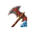
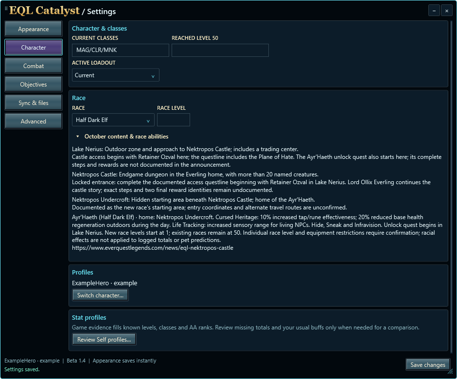
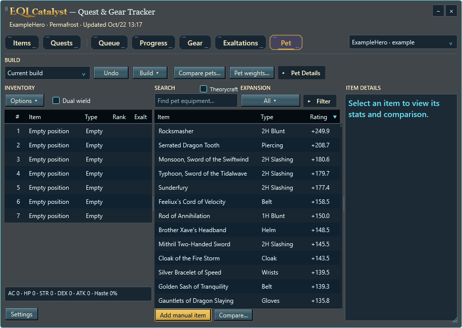
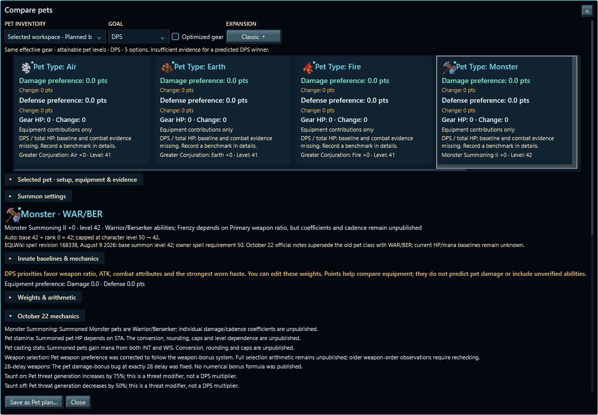

Three new areas, Ayr’Haeth race facts and separate race level, Monster Summoning with WAR/BER access, and current-patch mechanics evidence. Synthetic component captures; focused local review.
Measurement checklist and examples · Fillable measurement template · Validation findings




HP/mana and damage formulas remain unresolved where the game has not published coefficients. Preference points are not DPS.